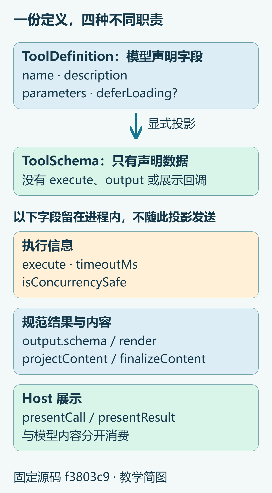
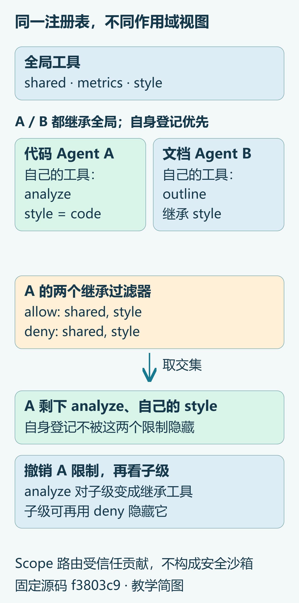
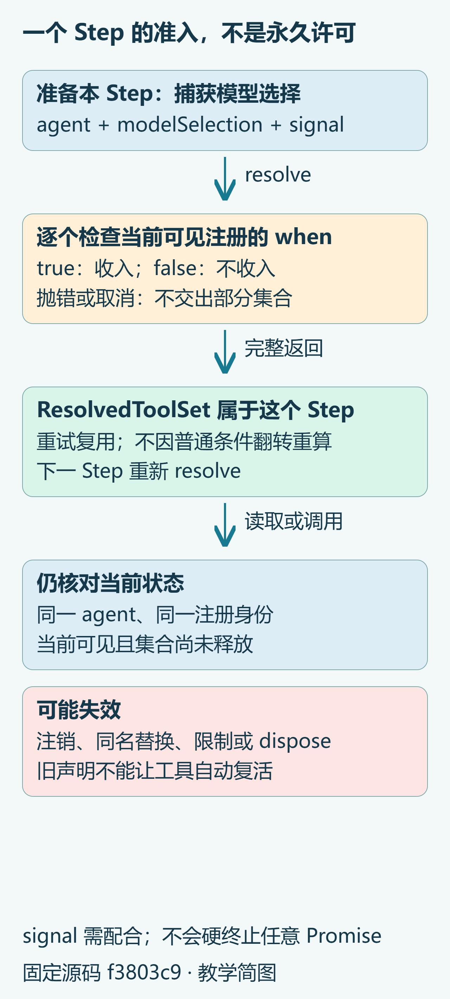
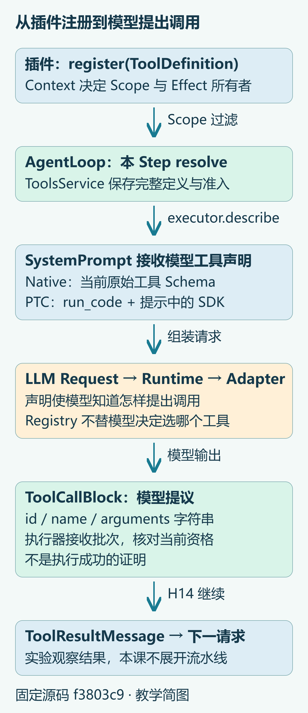

作者私有审查预览 · 实际LessonMarkdown与平台CSS · 未发布，未施测
第四模块集中审查 · H13
190～250 分钟（分三段：定义与 Schema 65～85 分钟，Scope 与准入 60～80 分钟，综合实践与推导 65～85 分钟；作者估计，待学员试读）
用户要读 README，模型为什么还需要一份工具名单？
代码阅读助手收到：“请读取项目 README，然后告诉我这个项目有什么功能。”模型可能知道 read_file 这个常见名称，也会写出 {"path":"README.md"}，但名称和 JSON 都不会让它取得本地文件句柄。真正读取要由宿主提供实现，再把可调用的能力声明给模型。
假设读取插件、搜索插件和文档插件同时接入：谁保存这些定义？模型怎样知道参数？代码分析 Agent A 和文档整理 Agent B 是否应该看见同一份工具？某个工具只适合当前模型怎么办？更麻烦的是，请求已经发出后，读取插件被卸载，模型却仍提出读取。工具注册表提供能力声明和查找机制；模型根据输入与可见声明提出选择，Harness 再判断调用能否被处理。 注册表不替模型决定“为了介绍项目，现在必须读取哪个文件”。
本课研究真实 ToolsService，通过 ctx.tools 使用它；包的默认导出还保留 ToolRuntime 别名。不要因为教学中说“工具注册表”，就去寻找一个名叫 ToolRegistry、包办所有工作的类。官方继续固定在 Commit f3803c96974ad4a94195fb97e5c637e9c2a3afe3，不以最新分支替换接口。实际系统只在说明场景中读取 README；本课实验使用内存数字和受控模型，不读项目文件、不调用真实模型。
核心路线分三段读。第一段学会声明与校验；第二段预测哪个 Agent、哪个 Step 可以使用；第三段用真实 Loop 请求和 Session 事实核对。蓝图原估时为 90～125 分钟；本正式稿加入 Schema、失败与四项实践后估为 190～250 分钟，增加 100～125 分钟，尚无实测学习时长。完整程序、测试与源码清单可按需展开，不必先通读所有实现。
九个旧词，接回同一个具体任务
Tool Calling 是模型提出结构化调用的方式；JSON Schema 描述数据形状。TypeScript 接口与推断帮助开发者写代码，并不会在运行时检查模型传来的 JSON。H05 的 Plugin 是接入宿主的贡献，Service 是被访问的能力，Context 是当前插件取得服务与登记贡献的入口；写了 inject 仍要挂载提供方。
H07 的 Effect 把登记和撤销归到所属 Fiber；Disposer 是那次登记的释放函数。H09 的 Agent Scope 决定感知作用域的服务如何保存、继承与路由贡献，不是操作系统沙箱。H10 的 Step 是一次准备、模型请求及其后续处理的边界，同一步可以有多个请求尝试。H11 已展示工具 Schema 如何进入请求；H12 已证明 ToolCallBlock 的参数保持 JSON 字符串，模型提出调用与工具返回结果是两个时刻。
| 对象 | README 任务中的对应物 | 今天应问什么 |
|---|---|---|
| ToolDefinition | 宿主的读取定义，包括函数与输出约定 | 谁登记、何时失效？ |
| ToolSchema | 发给模型的名称、说明和参数声明 | 当前请求究竟声明了什么？ |
| ToolCallBlock | 模型提出 read_file、id 与参数字符串 | 当前定义是否仍具备调用资格？ |
| ToolResultMessage | 工具角色消息，以 toolCallId 关联调用 | 模型下次读到了什么内容？ |
ToolCallBlock 不是函数对象，也不表示执行成功；ToolResultMessage 不是把整个 ToolDefinition 发回模型。调用 id 用来关联一次调用，工具名称用来查找能力，二者不可替代。
一份 ToolDefinition，包含四种不同职责
从 contracts.ts 的真实 ToolDefinition读字段。它继承 ToolSchema，但不能反过来把 Schema 当作完整定义。

| 职责 | 字段 | 读源码时的具体含义 |
|---|---|---|
| 让模型知道怎样提议 | name、description、parameters，及可选 deferLoading | 名称、用途与参数结构；deferLoading 的提供方投影属于 H11 的路线能力 |
| 供宿主执行与安排 | execute、timeoutMs、isConcurrencySafe | 主体返回规范 JSON；timeoutMs 是预算声明；并发分类器只提供可重叠信息 |
| 形成规范值与模型内容 | output.schema、output.render、可选 presentationMeta、projectContent、finalizeContent | 输出形状、模型内容与可回放展示事实分层；后两者是内容转换扩展点 |
| 供 Host 展示 | presentCall、presentResult | 从参数及结果投影卡片意图，纯展示，不在这里读文件或改变状态 |
timeoutMs 必须是正有限数，但注册表不会因登记这个字段就启动强制截止计时器。实际截止时间由相应 timeout policy 的包装机制施加；取消还需要正在运行的工作配合。isConcurrencySafe(args) 是分类器，不是全局线程安全证明；本课不展开调度算法。
projectContent 位于结果策略前的内容投影，finalizeContent 是更后面的最后内容转换；它们并不等于 output.render。尤其 finalizer 可能接到无效输入等失败，所以执行对象中的 arguments 仍是 unknown，不能直接照搬已校验主体里的类型假设。具体策略顺序与权威结果留到 H14。
Host 展示函数与模型内容也不同。官方 cookbook 还指出内置 Web Client 不直接消费 presentCall / presentResult，而从原始会话事件及 metadata 派生自己的组件。不能写了一个 Host presenter 就宣称 Web 页面自动出现专用卡片。详见工具编写参考。
用七个小步骤定义 calculate_sum
下面按 progressive.ts 的真实程序逐步读；1～3 是准备中的普通对象与 helper，不是缺字段也能登记的“半成品工具”。完整定义与环境在折叠代码中。
第一步：给模型清楚的名字和用途。
const identity = { name: 'calculate_sum', description: '计算两个数字之和。' };预期 identity.name 为 calculate_sum。描述影响模型怎样理解能力，不能替代参数校验，更不执行计算。
第二步：声明参数。
const parameters = {
a: { type: 'number', required: true },
b: { type: 'number', required: true },
} as const;
const compiled = parameterSchemaSpecToJsonSchema(parameters);编译结果是 type: 'object'，properties 里有 a、b，根上的 required 数组为 ['a','b']。作者 DSL 的必填写在每个属性，不能把 raw JSON Schema 的 required: ['a'] 直接放进这个参数映射。
第三步：先预测缺参数的结果，再校验。
validateArgs(parameters, { a: 7 });
// ['missing required property "b"']这里 helper 返回诊断列表；不要教成 helper 自己必然抛错。defineTool 的执行包装才在发现诊断时抛 ToolArgsError。传入 {a:'7',b:5} 不会帮你把字符串转成数字。
第四步：把输入类型、输出类型和函数接起来。
const definition = defineTool({ ...identity, parameters,
output: {
schema: { type: 'number' },
render: (_args, value) => [{ type: 'text', text: `总和 ${value}` }],
},
async execute(args) { return args.a + args.b; },
});回调里的 a、b 被推断为 number，输出也约束为 number。这是开发阶段的帮助。模型数据仍是运行时输入，真实 defineTool 包装会先验证参数再进入你的主体。见 schema.ts 的包装与投影。预期直接执行 {a:7,b:5} 得到规范值 12，render 得到 [{type:'text',text:'总和 12'}]；两者不同。
第五步：补业务规则。
if (Math.abs(args.a) > 1_000_000 || Math.abs(args.b) > 1_000_000)
throw new Error('单项绝对值超出业务上限');把这段放到 execute 的加法前。{a:2_000_000,b:5} 类型正确，仍会失败。本版本 DSL 不支持 minimum / maximum 等任意标准关键字；给 number 加 minimum:0 会在 Schema 编译阶段被拒绝，不能假装它已被运行时强制执行。业务规则还可以是跨字段关系；权限检查则问“当前主体能否做这件事”，它不是数字类型或范围问题。
第六步：注册并通过真实流水线调用。
const stop = h.ctx.tools.register(definition);
const good = await executeToolFixture(h.ctx, {
name: 'calculate_sum', arguments: { a: 7, b: 5 },
callId: ToolCallId('progressive'), signal: new AbortController().signal,
});h 来自后面的完整公共准备。预期 good 为成功、value=12、content 中有“总和 12”；错误类型得到 INVALID_ARGS。executeToolFixture 是官方 test-support helper，调用真实共享执行流水线，但没有 AgentLoop 或 Session 日志，所以这里只记 C 级。
直接调用 definition.execute 只经过该定义的参数包装与主体，不会顺便替你运行共享流水线的规范输出验证。不要因为 TypeScript 要求返回 number，就对 as any、JavaScript 或坏实现免检。实践 A 会故意让主体返回错类型，证明流水线拒绝它。
第七步：释放本次登记。
stop();
h.ctx.tools.get('calculate_sum'); // undefined这是注销，不是把 definition 变量销毁，也不是回滚已经完成的业务效果。完整程序的预期输出记录为 P，最后 registeredAfter:false。
想深入再看：渐进示例完整程序
import { defineTool, parameterSchemaSpecToJsonSchema, validateArgs } from '@deepseek-ai/dsh-tools';
import { executeToolFixture } from '@deepseek-ai/dsh-tool-testkit';
import { components, ToolCallId } from './support.ts';
export async function progressivePractice() {
// 1 声明给模型看的名称和说明；此时只是普通对象，不是完整工具。
const identity = { name: 'calculate_sum', description: '计算两个数字之和。' };
// 2 参数是属性映射，required 属于每个属性。
const parameters = { a: { type: 'number', required: true }, b: { type: 'number', required: true } } as const;
const compiled = parameterSchemaSpecToJsonSchema(parameters);
// 3 helper 返回诊断列表；不会自动抛 ToolArgsError。
const missing = validateArgs(parameters, { a: 7 });
// 4 defineTool 编译输入与输出；回调中的 args.a / args.b 被推断为 number。
const definition = defineTool({ ...identity, parameters,
output: { schema: { type: 'number' }, render: (_args, value) => [{ type: 'text', text: `总和 ${value}` }] },
async execute(args) {
// 5 业务上限由业务代码检查，DSL 不支持 minimum/maximum。
if (Math.abs(args.a) > 1_000_000 || Math.abs(args.b) > 1_000_000) throw new Error('单项绝对值超出业务上限');
return args.a + args.b;
} });
const canonical = await definition.execute({ a: 7, b: 5 }, {} as any);
const rendered = definition.output.render({ a: 7, b: 5 }, canonical);
// 6 用真实组件流水线校验输出；直接调用 execute 不包含这一层。
const h = await components();
try {
const stop = h.ctx.tools.register(definition);
const invoke = (args: unknown) => executeToolFixture(h.ctx, { name: identity.name, arguments: args,
callId: ToolCallId('progressive'), signal: new AbortController().signal });
const good = await invoke({ a: 7, b: 5 }), bad = await invoke({ a: '7', b: 5 });
const business = await invoke({ a: 2_000_000, b: 5 });
// 7 释放本次注册；不靠修改同进程借用的 definition 实现热替换。
stop(); return { identity, compiled, missing, canonical, rendered, good, bad, business,
registeredAfter: !!h.ctx.tools.get(identity.name) };
} finally { await h.close(); }
}Schema DSL：先预测数据，再看诊断
本版本有自己的作者词汇与受支持的 raw JSON Schema 子集，不能把任意网上 Schema 复制进来。输入使用 ParameterSchemaSpec 的属性映射，输出使用 ValueSchemaSpec 的任意值根；defineTool 将二者编译成 raw Schema。编译入口与 validateArgs是阅读起点。
| 作者节点 | 允许的数据 / 示例 | 容易误判的地方 |
|---|---|---|
| string | 'sum'，可用 enum / const | 不自动保证非空、路径合法或有访问权 |
| number | 有限、无损 JSON 数字 | '7' 不合格；NaN、Infinity、负零也不合格 |
| integer | 整数，例如 3 | TS 中仍是 number，运行时才限制整数 |
| boolean / null | true、false / null | 'true'、0 不能替代 |
| array | 稠密数组；items 描述元素 | 不声明 items 时接收无损 JSON 元素，不自动限制非空 |
| object | properties，且显式写 additionalProperties | 嵌套对象要明确开放 true 或关闭 false |
| json | 任意无损 JSON 值 | 编译成无类型约束的 {} 或仅注解；不接受 undefined、Date 等非 JSON 值 |
| oneOf | 至少两个分支，恰好匹配一个 | 不是“至少有一个符合就行”；不能再并写 type |
参数隐式根对象默认开放。显式嵌套 object 必须声明 additionalProperties: true | false；编译成 raw Schema 后，未写 additionalProperties 的普通对象仍按开放处理。不要把这三句话混成“所有对象默认关闭”。看实践 A 的输入：
parameters: {
data: { type: 'object', required: true, additionalProperties: false,
properties: {
values: { type: 'array', items: { type: 'number' }, required: true },
},
},
}先判断四份输入：{} 缺 data；{data:{values:[2,'4']}} 的第二项错误；{data:{values:[1],surprise:true}} 多了关闭对象的字段；{data:{values:[1]},note:'说明'} 在开放根多一个字段。前三份在主体前失败，第四份通过。实际诊断分别含 missing required property "data"、data.values[1] 与 data.surprise，不是一句模糊的“参数不合法”。
required:true 只用于属性；省略就可选，required:false 是不支持的作者声明。enum 与 const 的值要与节点类型一致；二者并存时 const 还须在 enum 内。default / examples 是注解，不给缺失参数自动补值。required:true, default:2 仍会拒绝缺失 a，C26 专门检验这个反例。
const valueSchema = valueSchemaSpecToJsonSchema({
oneOf: [{ type: 'number' }, { type: 'integer' }],
});
validateJsonSchemaValue(valueSchema, 1); // matched 2，失败
validateJsonSchemaValue(valueSchema, 1.5); // []，通过
validateJsonSchemaValue(valueSchema, '1'); // matched 0，失败TypeScript 的 number 联合不会替你表达“恰好命中一个”。固定实现还把精确类型推断限制在 16 层容器内，之后退回 JsonValue；运行时仍继续遍历完整声明。我们只需知道类型推断有边界，不把它宣传成数据来源的保证。类型推断依据官方类型测试与源码静态阅读；本课 tsx 运行不等于重新通过上游全仓类型检查。
规范结果是数据，模型内容是它的一种表达
把两数加法扩展成数字整理工具。输入 [2,4,6]，主体返回：
{ "total": 12, "count": 3 }output.schema 声明 total 是 number，count 是 integer；output.render(args,value) 再生成 [{type:'text',text:'总和 12，共 3 项。'}]。结构化数据方便程序读取字段与继续计算；自然语言方便模型理解。强迫后续程序从一句任意文案里解析“12”和“3”，容易把文案变化变成接口故障。标量字符串本身确实是领域结果时可以返回字符串，不是规定所有工具必须返回对象。
ContentBlock 是内容块联合，不只等于一段文本；本课仅使用 text。共享流水线把成功规范值校验、快照和冻结后交给渲染器，再产生结果。故障工具返回 {total:'12',count:3}，实际得到 INVALID_TOOL_OUTPUT，不会作为成功结构化值穿过。
执行中的成功结果可以携带 value，但这并不意味着内部值自动进入持久日志。ToolResultMessage 是 tool 角色消息，包含关联 id、content、错误状态等；规范值刻意不作为执行成功对象的持久载荷全量保存。本课 D 的 tool/result.data.message 有内容和 toolCallId，没有 value。要回放展示事实可使用合适的 metadata 投影，具体 post、内容替换、保密与持久投影在 H14 继续。
登记与撤销：同一个 Context 给出可见性和所有权
ctx.tools 是 ToolsService 的访问入口，不是静态工具数组。登记调用保存定义及可选 when；同一层重复名称报错，作用域自己的同名定义可以遮蔽上层。run_code 是执行器保留的 PTC transport 名称，普通全局或局部工具都不能抢占。
| 读取方式 | 没传 toolSet 时的意义 | 传了本 Step 的 toolSet |
|---|---|---|
| get(name, scope, toolSet?) | 查询该视图中的已登记定义 | 限于此集合且当前仍有效的定义 |
| definitions(scope, toolSet?) | 该 Scope 当前可见的完整定义数组 | 当前有效的已准入定义数组 |
| schemas(scope, toolSet?) | 上述定义的模型字段投影 | 只投影当前有效准入项 |
| executable(name, scope, toolSet?) | 无条件注册才有执行资格，条件工具不可用 | 用该集合决定当前资格 |
前面三种无 set 的查询不会替你执行 when。因此“我在 schemas(agent) 里看见条件工具”只证明注册视图，不证明模型本 Step 真能收到它。schemas 投影明确取 name、description、parameters、可选 deferLoading，并复制参数数据；不会枚举整个 definition，更不会把 execute 序列化发给模型。输出 Schema 属于内部能力与 SDK 的另一层需求，不在这个原始输入声明投影里。
export const inject = ['tools'];
export function apply(ctx: Context) {
const stop = ctx.tools.register(definition);
// stop 可主动撤销；所属插件卸载也会撤销这一次登记。
}这是登记形状，definition 来自前面的完整定义。真实 register 的 Effect 接入通过 ScopedLayers.effect 将层选择和当前 Fiber 所有权接起来。插件应使用宿主交给自己的 Context，不能为了方便借根 Context 登记，让短命插件贡献活到根层。实践 B 会真的卸载插件，看到 temporary 消失。
登记借用受信任同进程的只读定义，不是注册时就全面克隆、冻结和重验所有回调的安全隔离。注册后不要替换 schema 或回调；热替换应注销旧注册再登记新定义。外部仍持有旧 definition 的 JavaScript 引用，也不等于通过 Registry 取得继续执行的资格。
两个 Agent 为什么能有不同工具？
全局有 shared、metrics、style。代码 Agent A 自己登记 analyze 与 style=code；文档 Agent B 自己登记 outline，继续继承全局 style=global。A 的局部 style 遮蔽上层，同一视图只出现一个同名工具；B 不会看见 analyze。

通过真实 Agent 的 agent.ctx.tools.register 可贡献专属工具。实践 B 为只测注册规则，仿照官方 scoped 测试用结构化 Agent 载体作为真实 createScope 的键，未创建 Loop；实践 D 才创建实际 Agent 实例。父链要通过 Scope API 显式绑定，不是给普通对象加 parentAgent 字段就自动继承。
先预测下面两个限制叠加后的 A：
const allow = a.ctx.tools.restrict({ allow: ['shared', 'style'] });
const deny = a.ctx.tools.restrict({ deny: ['shared', 'style'] });继承工具必须同时满足各层的所有过滤器：有 allow 就必须在 allow 里，有 deny 就不能在 deny 里。shared 通过 allow 后仍被 deny 排除；metrics 没通过 allow；自身 analyze 与自身 style 不被这些限制自动隐藏，结果为 ['analyze','style']。撤销 deny，shared 恢复；再撤销 allow，metrics 恢复。
限制名要来自当前视图可识别的继承贡献，不能拿只有自身登记的 local 填进去，也不能写未知名或 run_code。要求带作用域 Context；空对象 {} 会报无效过滤，allow:[] 则是有效地隐藏全部继承工具。只有 deny 的过滤器允许日后新增而不在名单中的继承工具通过；allow 则会排除名单之外的新贡献。源码会把传入列表编译成私有集合，之后修改原数组不会偷偷更改规则。
这里“继承”包括部署全局与所有祖先 Scope，不只全局。某些注释还使用 global 的简写，须连同 view / restrict 的真实实现和官方 ancestor 测试读。A 的 analyze 对 A 是自身登记，到 A 的子 Scope 就成为继承项，子级能 deny 它。限制按层组合，不能简单说“allow 永远覆盖 deny”。
Scope 解决受信任插件的贡献路由，不能阻止任意同进程代码绕过这些服务直接访问资源。执行审批、权限守卫与操作系统强制在 H15；当前工具在视图中可见，只是后续检查的一项前提。
when 回答的是“这个 Step 适合声明它吗？”
某个数据工具只适合已选定的模型路线，或者当前状态尚不支持它。反复注销和登记会影响其他 Agent；更合适的是带条件登记，让每个 Step 单独解析。
ctx.tools.register(definition, {
when: ({ agent, modelSelection, signal }) => {
signal.throwIfAborted();
return agent === currentAgent && modelSelection.model === 'capable';
},
});这是从实践 C 抽出的条件形状。上下文有当前 agent、本步捕获的 modelSelection、取消 signal。不要再异步去读另一个“当前默认模型”，否则准备期间配置变化后，条件可能按模型甲判断，实际请求却使用捕获的模型乙。when 应只做轻量、无副作用的可用性判断，不在里面执行工具、变更注册或发起不可控工作。
AgentLoop 在本 Step 组装 SystemPrompt 之前捕获模型选择并调用 tools.resolve。它从当前 Scope 可见注册中逐个等待条件：true 纳入；false 正常排除；抛错包装成 ToolActivationError / TOOL_ACTIVATION_FAILED，保留 cause；取消则按 signal 失败。错误与 false 不是同义：false 表示正常不适用，错误说明本次准备没有得到完整可信的集合。失败或取消不返回部分准入集合，也不把某个 Agent 的判断写进全局注册状态。

取消并不是把任意 when Promise 直接抢先终止。实现会在等待前后检查 signal；如果条件不配合、一直不 settle，外部取消也不能凭空让这个 Promise 完成。实践 C 用可控门闩：进入 when 后 abort，此时 pending 仍未完成；放行门闩后才观察到 AbortError。整个实验不依赖“等 100ms 大概够了”，也不运行无限不结束的条件。
resolve 交出 ResolvedToolSet。同 Step 的请求重试使用已经准备的 assembly 与同一个集合，避免一次请求失败就重新判断条件而改变本步声明。它不是普通的新 Step；只有后续 Step 才再次 resolve。D_retry 的受控首尝试返回协议内 error，明确的 request-error 策略选择 retry；第二尝试成功，之后工具结果引出下一 Step。没有配置 retry 决策就不能画成自动恢复。
集合并非永久许可证。resolve 的当前身份检查要求精确的 agent 对象；每次 view 重新核当前可见注册及登记身份。条件准入后单纯把闭包 enabled 改成 false，不会重跑 when；但撤销登记、同名替换、实时限制变化仍会影响它。即使拿同一个 definition 对象注销再注册，也产生新注册记录，旧 set 不能把它认成原登记。旧 set 也不会收进后来新登记的工具。
dispose 使本 set 永久为空，不注销共享工具。Loop 在 Step 的工具批次结算后释放，准备失败或被放弃时也释放。手动调用 resolve 的实践 C 必须自己配对 dispose；不要把它保存成跨 Step 的缓存。集合实时读取的变化也不会追溯改写已经发给模型的那份请求，所以之后的 ToolCall 仍可能失败。
四个问题，不能用一个“有工具”回答
| 状态 | 已登记且该 Agent 可见 | 本 Step schemas(agent,set) | 当前 executable(agent,set) |
|---|---|---|---|
| 条件 false | 是；无 set 的检查可看到定义 | 无该项 | 无 |
| 准入 true 后，普通闭包状态变 false | 是 | 仍有，未重算 when | 仍具备注册层资格 |
| 准入 true 后注销 | 否 | 无 | 无 |
| 注销再登记同对象 | 新登记可见 | 旧 set 无；新 resolve 可纳入 | 旧 set 无 |
| 对继承项加 deny | 登记仍在，但本 Agent 不可见 | 无 | 无 |
| 撤销 deny，原登记未变 | 可见 | 原 set 可恢复该已准入项 | 可恢复注册层资格 |
| set.dispose | 登记可仍在 | 永远为空 | 无 |
表中“具备资格”只说明 Registry 与准入这一层，不保证后面的策略、取消、执行器和业务成功。模型看到一个声明，不保证之后一定调用成功；注册表存在一个定义，也不保证当前请求收到它。四问还应区分“存在于某层”和“当前 Agent 视图能看见”：全局定义被同名局部遮蔽后，不能仅凭全局 get 推导 Agent 实际绑定。
Executor 决定怎样向模型描述能力
Tool Registry 持有完整定义；ToolExecutor 有 describe(tools) 与 execute(batch) 两个基础入口：前者返回 schemas / knownNames，后者接收原始 ToolCallBlock 批次。Registry 选择作用域的执行器并委托，不在这里替模型创造调用。见执行器公开契约。
Native describe 把当前可用定义逐个投影成原始工具 Schema。PTC 的实际路径是 packages/core/tool-executor-ptc/src/index.ts；其 describe 只声明保留入口 run_code，其他工具通过提示中的生成 SDK 访问。它不是逐个把所有原始工具放进 request.tools。SDK 还需要规范输出 Schema 来生成程序侧类型；这不代表原生 ToolSchema 多了 output 字段。
本课 PTC 结论来自固定源码 describe 与 renderSdk和官方 ptc.spec 的 mode-aware wire contribution 测试阅读；未启动 PTC Runtime，也未执行模型生成代码。Native 执行器则在 C/D 中真实运行。H14 再展开批次调度、共享流水线、前后策略和结果归一化。
让 H11 的输入与 H12 的输出接到同一项定义

沿实践 D 读九个连接点。插件 register 保存完整定义；Scope 产生当前 Agent 的视图；Loop 捕获模型并 resolve；ToolsService 在构造时向 SystemPrompt 注册工具 provider；provider 调用当前 executor.describe；SystemPrompt 收集、复制参数并排序，形成 assembly.tools；Loop 使用它组装请求；Runtime 根据 Adapter 能力投影后交付；Mock 模型发出 ToolCallBlock，随后 Native 处理批次时按本步 set 查当前执行资格。
SystemPrompt 没有调用工具主体，也不是在系统文本中随意拼一串函数源码。工具声明是结构化工具输入，与提示 sections 分开。其工具声明仍由 provider 拥有；普通 assemble 文本 waterfall 不能随意改造这份声明。源码起点：ToolsService provider、SystemPrompt assemble、Loop 准备。
成功 D 的原始 Session 摘录如下。保留实际 seq，省略未相关的 inbox、header 和结尾记录；“准入观察”是作者回调数据，不冒充 Session 事件。
| 来源 | seq / 位置 | 实际观察 |
|---|---|---|
| 作者 Prompt 回调 | Step 1 | admitted = calculate_sum；when 已执行 1 次 |
| Adapter 输入 | 请求 1 | tools 有 calculate_sum；参数根包含 data |
| Session | seq 8，turn 1 / step 1 | assistant/message 含 sum-1 的 ToolCallBlock |
| Session | seq 9，同 Step | tool/call，data.callId = sum-1 |
| 工具主体 | 非 Session 事件 | bodies 增至 1，返回 total=12、count=3 |
| Session | seq 10，同 Step | tool/result，message.toolCallId = sum-1，内容为总和与数量 |
| Session | seq 12，turn 1 / step 2 | step/start；重新准入 |
| Adapter 输入 | 请求 2 | messages 已有工具结果，随后模型返回固定总结 |
原始 practice-output.json 同时保留 loopRequests 与 Adapter requests。本夹具不支持 toolUpdate；若下一步移除了工具，Loop 中会有 developer/tool-removal 历史，而 Runtime 按真实 projectToolUpdates 在 Adapter 侧移除这些更新消息，tools 仍体现当前活动列表。不能要求两侧逐字相等，也不能把这份投影差异当成 Session 丢失。H11 已讲投影，本课只用一个真实失败修正点验证它。
本课 D 的成功路径确实执行了 Native 计算与结果提交；这是验证范围，不在正文提前教授整条 H14 策略流水线。撤销、同名替换和 deny 反例中，请求 1 确实包含声明，Mock 仍发同样的 ToolCallBlock，但主体为 0，tool/result 是 unknown tool 错误。模型语言输出与宿主效果要分别查证。
四项实践：先预测，再运行，最后解释
完整实验目录为 course-content/internal/deepseek-harness/h13/lab/，统一运行器在 docs/deepseek-harness-v2/h13/scripts/run-labs.mjs。在本仓库根目录运行：
python docs/deepseek-harness-v2/h13/scripts/check-sources.py
node docs/deepseek-harness-v2/h13/scripts/run-labs.mjs需要 Node 24.16.0、仓库已有 tsx、固定官方源码缓存与隔离依赖。源码位置可用 HARNESS_SOURCE_CACHE 指定；依赖锚点可用 H13_DEPS_ANCHOR / H13_ZOD_ANCHOR 指定。运行器先核源码 SHA256 与依赖版本/完整性，再复制全部 lab 到新的临时目录，用上游 tsconfig 路径映射解析真实包。它不修改上游源码，不传 API 凭据，不读取个人 Harness Home，不执行网络工具；新 fixture 目录保留，不做批量清理。完整安装锚点与复现步骤见作者目录 README。运行得到 37 项通过（C31、D6）和一项故意错误答案的预期失败；所有程序也可在这个准备好的临时目录用同一 bootstrap 单独运行。
公共代码负责真实服务挂载、受控 Adapter 和计算定义。C 的 Scope 键是最小结构化载体；D 的 harness 创建真实 Agent。仅模型回复、算术主体和明确故障门闩由课程控制，不把它们称为真实模型表现或完整应用集成。
想深入再看：完整公共准备
// 官方真实服务；替代的只有模型响应、工具内容与明确的故障门。
import { Context } from '@deepseek-ai/cordis';
import AgentRegistry from '@deepseek-ai/dsh-agent';
import AgentLoop from '@deepseek-ai/dsh-agent-loop';
import LlmRuntime, { LlmAdapter, createUserMessage, ToolCallId } from '@deepseek-ai/dsh-llm';
import type { GenerateOptions, StreamChunk } from '@deepseek-ai/dsh-llm';
import SessionStore, { SessionId } from '@deepseek-ai/dsh-session';
import SessionProjectionRegistry from '@deepseek-ai/dsh-session-projection';
import SystemPrompt from '@deepseek-ai/dsh-system-prompt';
import ToolRuntime from '@deepseek-ai/dsh-tools';
import * as NativeToolExecutor from '@deepseek-ai/dsh-tool-executor-native';
import { createScope } from '@deepseek-ai/dsh-scope';
import { defineTool } from '@deepseek-ai/dsh-tools';
export { defineTool };
export { Context, ToolCallId };
export const gate = <T = void>() => Promise.withResolvers<T>();
export async function* sequence<T>(items: readonly T[]): AsyncGenerator<T> { for (const v of items) { await Promise.resolve(); yield v; } }
export const textOf = (m: any) => m.content?.filter((b: any) => b.type === 'text').map((b: any) => b.text).join('') ?? '';
export function textChunks(text = '项目是一个固定演示。'): StreamChunk[] {
return [{ type: 'block-start', index: 0, blockType: 'text' },
...[text.slice(0, 3), text.slice(3, 7), text.slice(7)].map(text => ({ type: 'text-delta' as const, index: 0, text })),
{ type: 'block-end', index: 0, block: { type: 'text', text } },
{ type: 'usage', usage: { inputTokens: 10, outputTokens: 4 } }, { type: 'finish', reason: { kind: 'stop' } }];
}
export type Response = StreamChunk[] | ((options: GenerateOptions) => AsyncIterable<StreamChunk>);
export class ScriptedAdapter extends LlmAdapter {
readonly requests: GenerateOptions[] = [];
constructor(readonly responses: Response[]) { super(); }
override async resolveModel(provider: string, model: string) {
return { provider, id: model, name: model, defaultMaxTokens: 128, context: { contextWindow: 4096 } };
}
stream(options: GenerateOptions): AsyncIterable<StreamChunk> {
this.requests.push(options);
const response = this.responses.shift();
if (response === undefined) throw new Error('fixture response exhausted');
return typeof response === 'function' ? response(options) : sequence(response);
}
}
export async function harness(adapter: LlmAdapter) {
const ctx = new Context(), handles: any[] = [], trace: any[] = [];
for (const p of [LlmRuntime, SessionStore, SessionProjectionRegistry]) await ctx.plugin(p as any);
await ctx.plugin(SystemPrompt, { includeHarnessIdentity: false, personaPrefix: '你是代码助手。' });
for (const p of [ToolRuntime, NativeToolExecutor, AgentRegistry]) await ctx.plugin(p as any);
await ctx.plugin(AgentLoop, { agents: [] }); ctx.llm.registerAdapter(['fixture'], adapter);
ctx.on('session/event', (session, event) => { trace.push({ channel: 'fact', sessionId: session.id, event: structuredClone(event) }); });
ctx.on('agent/assistant-stream', ({ agent, frame }) => { trace.push({ channel: 'live', agentId: agent.id, frame: structuredClone(frame) }); });
ctx.on('agent/error', ({ error }) => { trace.push({ channel: 'error', error: String(error), members: error instanceof AggregateError ? error.errors.map(String) : [] }); });
async function create(id: string) { const h = await ctx.agents.create({ sessionId: SessionId(id), agentOptions: { provider: 'fixture', model: 'scripted' } }); handles.push(h); return h.agent; }
return { ctx, trace, create, async close() { for (const h of handles) await h.dispose(); await ctx.fiber.dispose(); } };
}
export async function send(agent: any, text = '请计算 2、4、6 的总和与数量。') {
agent.followup(createUserMessage({ content: [{ type: 'text', text }], source: { kind: 'user' } })); await agent.whenIdle();
}
// C 级：真实 Scope 的键用结构化 Agent 载体，未创建 Loop。D 级另用 harness.create。
export async function components() {
const ctx = new Context();
for (const p of [SystemPrompt, ToolRuntime, NativeToolExecutor]) await ctx.plugin(p as any);
const scopes: any[] = [];
async function scope(id: string, parent?: object) {
const agent = { id: SessionId(id) } as any;
let owned: any;
await ctx.plugin(Object.assign((inner: Context) => { owned = createScope(inner, agent, parent ? { parent } : {}); }, { inject: ['tools'] }));
scopes.push(owned); return { agent, ctx: owned.ctx, dispose: () => owned.dispose() };
}
return { ctx, scope, async close() { for (const s of scopes.reverse()) await s.dispose(); await ctx.fiber.dispose(); } };
}
export function sumTool(name = 'calculate_sum', body?: () => void) {
return defineTool({ name, description: '计算给定数字的总和与数量，不读取文件。',
parameters: { data: { type: 'object', required: true, additionalProperties: false,
properties: { values: { type: 'array', items: { type: 'number' }, required: true } } } },
output: { schema: { type: 'object', additionalProperties: false,
properties: { total: { type: 'number', required: true }, count: { type: 'integer', required: true } } },
render: (_args, value) => [{ type: 'text', text: `总和 ${value.total}，共 ${value.count} 项。` }] },
async execute(args) { body?.(); if (args.data.values.length === 0) throw new Error('至少提供一个数');
return { total: args.data.values.reduce((a, b) => a + b, 0), count: args.data.values.length }; } });
}
export function scalarTool(name: string, value = name) {
return defineTool({ name, description: '受控字符串工具', parameters: {},
output: { schema: { type: 'string' }, render: (_a, v) => [{ type: 'text', text: v }] }, async execute() { return value; } });
}
export function callChunks(name = 'calculate_sum', args: unknown = { data: { values: [2, 4, 6] } }): StreamChunk[] {
const block = { type: 'tool-call' as const, id: ToolCallId('sum-1'), name, arguments: JSON.stringify(args) };
return [{ type: 'block-start', index: 0, blockType: 'tool-call' },
{ type: 'tool-call-delta', index: 0, id: block.id, name, argumentsDelta: block.arguments },
{ type: 'block-end', index: 0, block }, { type: 'finish', reason: { kind: 'tool-calls' } }];
}
export const names = (items: readonly { name: string }[]) => items.map(t => t.name).sort();想深入再看：统一运行入口
import { definitionsPractice } from './definitions.ts';
import { scopesPractice } from './scopes.ts';
import { admissionPractice } from './admission.ts';
import { requestsPractice } from './requests.ts';
import { progressivePractice } from './progressive.ts';
for (const [name, run] of [['P', progressivePractice], ['A', definitionsPractice], ['B', scopesPractice], ['C', admissionPractice],
['D', () => requestsPractice('success')], ['D_retry', () => requestsPractice('retry')],
['D_false', () => requestsPractice('false')], ['D_remove', () => requestsPractice('remove')],
['D_replace', () => requestsPractice('replace')], ['D_restrict', () => requestsPractice('restrict')]] as const)
console.log(name + ' ' + JSON.stringify(await run()));实践 A：定义与注册数字整理工具
先写一张预测表：正确三项输入、缺少 data、数组元素为字符串、嵌套多余字段、根多余字段、空数组、错误规范输出，分别在哪层失败？再运行 A，逐项解释 bodies 为什么为 3；只报一个最终成功不算完成。
想深入再看：实践 A 完整程序
import { components, sumTool, ToolCallId, textOf } from './support.ts';
import { executeToolFixture } from '@deepseek-ai/dsh-tool-testkit';
export async function definitionsPractice() {
const h = await components(); let bodies = 0;
try {
const definition = sumTool('calculate_sum', () => bodies++);
const stop = h.ctx.tools.register(definition);
const invoke = (args: unknown, name = 'calculate_sum') => executeToolFixture(h.ctx,
{ name, arguments: args, callId: ToolCallId('A'), signal: new AbortController().signal });
const valid = await invoke({ data: { values: [2, 4, 6] } });
const missing = await invoke({}), wrong = await invoke({ data: { values: [2, '4'] } });
const nestedExtra = await invoke({ data: { values: [1], surprise: true } });
const rootExtra = await invoke({ data: { values: [1] }, note: '根默认开放' });
const business = await invoke({ data: { values: [] } });
// 教学故障注入：绕开 TS 返回类型，证明流水线仍检查输出。不要在产品代码这样写。
h.ctx.tools.register({ ...sumTool('bad_output'), execute: async () => ({ total: '12', count: 3 }) as any });
const invalidOutput = await invoke({ data: { values: [2, 4, 6] } }, 'bad_output');
const projection = h.ctx.tools.schemas().find(s => s.name === 'calculate_sum')!;
const before = !!h.ctx.tools.get('calculate_sum'); stop(); const after = !!h.ctx.tools.get('calculate_sum');
return { valid, rendered: textOf(valid), missing, wrong, nestedExtra, rootExtra, business,
invalidOutput, bodies, projection, registered: [before, after] };
} finally { await h.close(); }
}想深入再看：实践 A 详细参考答案
正确输入得到 value {total:12,count:3} 和独立的 text 内容。缺 data、错误元素与嵌套 surprise 都得到 INVALID_ARGS，主体未运行；根 note 在开放根被接受，输出 total=1、count=1。空 values 满足 array 形状，但主体的非空业务检查抛错。因此 calculate_sum 主体共运行三次：正确、根多字段、空数组；最后一次运行不等于成功。
bad_output 是刻意绕过 TS 返回检查的故障实现，独立于这个计数器；共享流水线拒绝 total 为字符串，给 INVALID_TOOL_OUTPUT。若只直接调它的 execute，不会得到同样的输出门禁，这就是 C27 与 C07 的边界对照。schemas 只有声明字段，登记前后查询为 true/false；不能由投影看不见 execute 推断宿主没有函数。这个实验没有 AgentLoop 或 Session，属于 C，而非 D/E。
自评 10 分：参数四种失败/开放情况 4 分；主体次数与业务规则 2 分；规范值/模型内容/输出校验边界 3 分；注销 1 分。把空数组称为 Schema 拒绝，或把 root note 称为非法，各扣对应因果分。
实践 B：给代码 Agent 与文档 Agent 不同视图
在运行前写出 A/B 初始集合，再算 allow、deny 交集，最后加上子 Scope。额外预测：temporary 的插件卸载后，保留 stop 变量再次调用，能把它恢复吗？
想深入再看：实践 B 完整程序
import { components, scalarTool, names } from './support.ts';
export async function scopesPractice() {
const h = await components();
try {
h.ctx.tools.register(scalarTool('shared')); h.ctx.tools.register(scalarTool('style', 'global'));
h.ctx.tools.register(scalarTool('metrics'));
const a = await h.scope('code-agent'), b = await h.scope('document-agent');
a.ctx.tools.register(scalarTool('analyze')); a.ctx.tools.register(scalarTool('style', 'code'));
b.ctx.tools.register(scalarTool('outline'));
const read = (s: any) => names(h.ctx.tools.definitions(s.agent));
const initial = { a: read(a), b: read(b),
aStyle: await h.ctx.tools.get('style', a.agent)!.execute({}, {} as any),
bStyle: await h.ctx.tools.get('style', b.agent)!.execute({}, {} as any) };
const allow = a.ctx.tools.restrict({ allow: ['shared', 'style'] });
const deny = a.ctx.tools.restrict({ deny: ['shared', 'style'] });
const intersect = read(a); // 自己注册的 analyze/style 保留，继承的 shared 被隐藏。
deny(); const liftedDeny = read(a); allow();
const child = await h.scope('code-child', a.agent);
const inherited = read(child), hideAncestor = child.ctx.tools.restrict({ deny: ['analyze'] });
const filteredAncestor = read(child); hideAncestor();
let stop!: () => void;
const plugin = await b.ctx.plugin(Object.assign((ctx: any) => { stop = ctx.tools.register(scalarTool('temporary')); }, { inject: ['tools'] }));
const beforeUnload = read(b); await plugin.dispose(); const afterUnload = read(b); stop();
await a.dispose(); const afterScopeDispose = read(a);
return { initial, intersect, liftedDeny, inherited, filteredAncestor, beforeUnload, afterUnload, afterScopeDispose };
} finally { await h.close(); }
}想深入再看：实践 B 详细参考答案
A 初始为 analyze、metrics、shared、style，B 为 metrics、outline、shared、style。aStyle=code、bStyle=global，证明同名解析到不同定义，不只比较相同名称。A 的 allow 再叠 deny 后只剩自身 analyze/style；撤销 deny 后为 analyze/shared/style；撤销 allow 恢复 metrics。
子级继承 A 的 analyze，自己 deny analyze 后只剩 metrics/shared/style。A 自己的登记豁免不意味着它对所有后代永远豁免。B 的 temporary 由真实插件 Context 登记，插件卸载后消失；再次 stop 不会重新注册。A Scope 释放后自身贡献消失，按旧键查询仍能看见存在的全局 metrics/shared/style，这不表示已释放 Agent 可以继续运行。
本程序只用真实 Scope 与 ToolsService，键是按官方组件测试方式构造的最小 Agent 载体，没有 Loop、模型或会话。自评 10 分：初始与遮蔽 3 分；过滤交集 3 分；祖先变继承项 2 分；所有权与撤销 2 分。把 allow 当最终授权或把 Scope 当沙箱，不得该因果项分。
实践 C：条件、门闩与旧集合
先填写前面的四问表，尤其预测“enabled=false 后读旧 set”和“同对象重登记后读旧 set”为什么不同。取消实验只改变 signal，不靠真实定时器猜执行阶段。
想深入再看：实践 C 完整程序
import { components, scalarTool, names, gate } from './support.ts';
export async function admissionPractice() {
const h = await components(); const a = await h.scope('admission');
const modelSelection = Object.freeze({ provider: 'fixture', model: 'capable' });
const resolve = (signal = new AbortController().signal) => h.ctx.tools.resolve({ agent: a.agent, modelSelection, signal });
const sets: any[] = [];
try {
let enabled = false, checks = 0;
const def = scalarTool('conditional');
let stop = h.ctx.tools.register(def, { when: ({ agent, modelSelection, signal }) => {
checks++; signal.throwIfAborted(); return agent === a.agent && modelSelection.model === 'capable' && enabled;
} });
const denied = await resolve(); sets.push(denied);
const registered = !!h.ctx.tools.get('conditional', a.agent);
const outsideStep = !!h.ctx.tools.executable('conditional', a.agent);
enabled = true; const admitted = await resolve(); sets.push(admitted);
enabled = false;
const sameStep = [1, 2].map(() => names(h.ctx.tools.schemas(a.agent, admitted)));
const nextStep = await resolve(); sets.push(nextStep);
const restrict = a.ctx.tools.restrict({ deny: ['conditional'] });
const masked = names(h.ctx.tools.schemas(a.agent, admitted)); restrict();
const restored = names(h.ctx.tools.schemas(a.agent, admitted));
stop(); const removed = names(h.ctx.tools.schemas(a.agent, admitted));
stop = h.ctx.tools.register(def, { when: () => true }); // 同一 def 对象，新注册身份。
const replacement = names(h.ctx.tools.schemas(a.agent, admitted));
const fresh = await resolve(); sets.push(fresh); const refreshed = names(h.ctx.tools.schemas(a.agent, fresh));
fresh.dispose(); const released = names(h.ctx.tools.schemas(a.agent, fresh)); stop();
h.ctx.tools.register(scalarTool('broken'), { when: () => { throw new Error('受控条件失败'); } });
let thrown: any;
try { await resolve(); } catch (e: any) { thrown = { name: e.name, code: e.code, message: e.message, cause: e.cause?.message }; }
const brokenStop = h.ctx.tools.get('broken'); // 仍是登记定义；抛错未改共享注册。
// 单独的新夹具隔离取消场景，避免先被 broken 拒绝。
const c = await components(), ca = await c.scope('cancel');
const entered = gate(), finish = gate<boolean>(), abort = new AbortController(); let settled = false;
try {
c.ctx.tools.register(scalarTool('pending'), { when: async () => { entered.resolve(); return finish.promise; } });
const pending = c.ctx.tools.resolve({ agent: ca.agent, modelSelection, signal: abort.signal });
const observed = pending.then(() => { settled = true; return 'unexpected'; }, e => { settled = true; return e.name; });
await entered.promise; abort.abort(); await Promise.resolve();
const settledAtAbort = settled; finish.resolve(true); const cancel = await observed;
return { registered, outsideStep, denied: names(h.ctx.tools.schemas(a.agent, denied)), sameStep,
nextStep: names(h.ctx.tools.schemas(a.agent, nextStep)), checks, masked, restored, removed, replacement,
refreshed, released, thrown, brokenStillRegistered: !!brokenStop, settledAtAbort, cancel };
} finally { finish.resolve(false); await c.close(); }
} finally { for (const s of sets) s.dispose(); await h.close(); }
}想深入再看：实践 C 详细参考答案
registered=true，outsideStep=false，第一份 denied 为空。enabled=true 后新 set 纳入 conditional；再改 false，旧集合两次读取仍有它，下一份 resolve 则为空，原条件共评估 3 次。这里两次读取只是准入复用的组件演示；真实请求重试另由 D_retry 跨 Loop 验证。
对已准入的继承项加 deny 会得到 masked=[]，撤销后 restored=['conditional']，因为同一登记仍在。注销使 removed=[]；同 definition 对象重新登记仍 replacement=[]，新 set 才能 refreshed=['conditional']。dispose 后 released=[]，不会注销定义。抛错不是一个 false 集合：得到 TOOL_ACTIVATION_FAILED，cause 为受控失败，登记仍在。
取消在 entered 门闩证明 when 已开始后发生；此时 settledAtAbort=false。放行 finish 才得到 AbortError。这个输出不代表取消无效，而是说明取消没有硬抢占不配合的 Promise。真实条件应观察 signal 并尽快结束。手动创建的所有 set 在 finally 释放，第二夹具专门隔离 broken，避免取消场景先被旧异常挡住。
自评 10 分：false/true/throw 3 分；旧集合与新集合 3 分；实时身份/限制 2 分；取消等待与资源配对 2 分。把闭包翻转当实时撤权、把重登记当原身份、把 abort 当强杀，均扣对应解释分。
实践 D：从注册走到请求与真实工具结果
先运行 success，再改为 false、retry、remove、replace、restrict。预测每种请求声明、主体计数和结果。测试与 demo 都执行全部六种，demo 保留每种完整轨迹及每次请求的事件前缀，并在第二个真实内存 Session 中重建核对。这里的计算器不会读取文件；用户的 README 任务只是提出注册机制的动机。
想深入再看：实践 D 完整程序
import assert from 'node:assert/strict';
import SessionStore, { SessionId } from '@deepseek-ai/dsh-session';
import { Context, harness, ScriptedAdapter, sumTool, callChunks, textChunks, send, names } from './support.ts';
export type RequestCase = 'success' | 'false' | 'retry' | 'remove' | 'replace' | 'restrict';
export async function requestsPractice(kind: RequestCase = 'success') {
const responses = kind === 'retry'
? [[{ type: 'finish', reason: { kind: 'error', failure: { code: 'SERVER', message: '受控首尝试失败' } } }], callChunks(), textChunks('总和 12，共 3 项。')]
: [callChunks(), textChunks('固定总结')];
const adapter = new ScriptedAdapter(responses), h = await harness(adapter);
let checks = 0, bodies = 0, enabled = kind !== 'false', modelAtWhen: unknown;
const admissions: any[] = [], loopRequests: any[] = [], sets: any[] = [];
const replay = new Context(), requestPrefixes: any[] = [];
await replay.plugin(SessionStore);
try {
const agent = await h.create('h13-' + kind);
const definition = sumTool('calculate_sum', () => bodies++);
const stop = h.ctx.tools.register(definition, { when: input => {
checks++; modelAtWhen = input.modelSelection; return enabled && input.modelSelection.model === 'scripted';
} });
const registered = names(h.ctx.tools.definitions(agent));
// 真实 Prompt 回调收到 Loop 的 toolSet。只记录，不伪造 Session 事件。
h.ctx.systemPrompt.section({ name: 'admission-observer', order: 1,
text: ({ scope, toolSet }: any) => { sets.push(toolSet); admissions.push(names(h.ctx.tools.schemas(scope, toolSet))); return ''; } });
h.ctx.on('llm/stream', async function* (options: any, next: any) {
const prefix = agent.session.snapshotEvents();
const rebuilt = replay.sessions.prepare(SessionId('rebuild-' + kind + '-' + requestPrefixes.length), { seed: prefix });
const header = rebuilt.requestHeader()!;
assert.deepEqual(rebuilt.deriveMessages(), options.messages);
for (const [key, value] of Object.entries(header.config)) assert.deepEqual(options[key], value);
assert.deepEqual(header.tools ?? [], options.tools ?? []);
assert.deepEqual(rebuilt.toolHistory(), options.toolHistory);
requestPrefixes.push({ throughSeq: prefix.at(-1)?.seq, events: prefix,
reconstruction: 'PASS messages/config/tools/toolHistory from second real Session' });
loopRequests.push(structuredClone({ ...options, signal: undefined })); yield* next();
});
if (kind === 'retry') h.ctx.on('agent/request-error', async () => { enabled = false; return { kind: 'retry' }; });
// 第一次模型请求已经取得声明后，受控替身在发出 ToolCallBlock 前撤销或改变可见性。
const first = adapter.responses[0];
if (['remove', 'replace', 'restrict'].includes(kind)) adapter.responses[0] = options => {
if (kind === 'restrict') agent.ctx.tools.restrict({ deny: ['calculate_sum'] });
else { stop(); if (kind === 'replace') h.ctx.tools.register(definition, { when: () => true }); }
return (async function* () { for (const chunk of first as any[]) yield chunk; })();
};
await send(agent);
const facts = h.trace.filter(e => e.channel === 'fact').map(e => e.event);
const calls = facts.filter(e => e.type === 'tool/call'), results = facts.filter(e => e.type === 'tool/result');
return { kind, registered, inspectionAfter: names(h.ctx.tools.schemas(agent)), admissions, checks, bodies, modelAtWhen,
requests: adapter.requests.map(r => structuredClone({ ...r, signal: undefined })), loopRequests, requestPrefixes,
calls, results, facts, errors: h.trace.filter(e => e.channel === 'error'),
released: sets.map(s => names(h.ctx.tools.schemas(agent, s))) };
} finally { await replay.fiber.dispose(); await h.close(); }
}想深入再看：实践 D 详细参考答案
success 有两个 Step、两次请求、两次条件检查、一次主体；第一次 ToolCallBlock 的 sum-1 对应 tool/call.data.callId 与结果 message.toolCallId，第二请求读到“总和 12”。Prompt 回调记录两份已准入集合，Step 结束后保存下来的 set 都读空。观察集合的作者回调没有创造新 Session 事实。
false 虽有登记，但第一次 request.tools 无该项；故意违背声明的 Mock 仍提议调用，宿主拒绝，主体为 0。remove/replace/restrict 则先把声明发给 Adapter，再在它输出调用前改变登记或可见性；同样主体为 0。replace 使用同一对象仍失败，证明查的不只是名字或对象引用。它们不是未经允许的调用“先执行再报错”。
retry 首尝试得到协议内 error，request-error 显式选择 retry 并将 enabled 改为 false；第二尝试仍使用 Step 1 的声明与准入并成功调用。之后进入 Step 2 才重新判断，集合为空。结果为两 Step、三次请求、两次 when、一次主体；Session 有一条 assistant/attempt。Runtime 根据路线移除不支持的 developer 工具更新，完整两侧请求保留在证据中，不裁剪成同一份。
这六项是 D：ToolsService、SystemPrompt、Scope、AgentLoop、内存 Session、真实 Native 执行器与 Mock LLM 全部连通，检查请求→调用→结果→下一请求。替身是模型回复和数字业务，未触发真实供应商、文件/Shell、PTC、审批、磁盘恢复或完整应用启动，不能升格为 E。自评 10 分：请求与事实关联 3 分；失败反例 3 分；重试计数 3 分；证据边界 1 分。
十道推导与思考题
- ToolDefinition 继承 ToolSchema，为什么仍不能把定义整个发给模型？
想深入再看：思考 1 参考答案
继承只说明定义含有声明所需字段，不说明全部字段属于协议。execute 是同进程函数，output 与内容/卡片回调由宿主消费，timeout 等也是内部安排信息。projectToolSchema 显式选字段，既让协议保持稳定，也避免把实现细节混进模型输入。PTC 的 SDK 会额外利用输出 Schema，但仍由执行器决定如何描述，不是序列化整个对象。
- 根据配置推导：
values是 number 数组，输入[]，Schema 能否自动保证工具业务成功？若 default=[1] 呢？
想深入再看：思考 2 参考答案
空的稠密数组满足 array/items，没有“至少一项”的业务保证；主体可以像 A 一样显式拒绝。default 是注解，不会把已给的空数组替换成 [1]，也不会自动为缺失必填项补值。数据形状、业务可接受性、当前主体有无执行权是三个问题，任何一个通过都不能替另两个作答。本版本不支持的关键字不能假装会执行。
- 根据代码推导：
oneOf:[{type:'number'},{type:'integer'}]对 2、2.5、'2' 各怎样？TS number 联合为什么帮不上？
想深入再看：思考 3 参考答案
2 同时是 number 与 integer，命中两个分支而失败；2.5 仅命中 number，通过；字符串 '2' 命中零个分支而失败。oneOf 要恰好一个，与一般联合的“属于任一类型”不同。TS 类型还会在运行时擦除，模型 JSON 可来自任何文本，开发者自己的 number 类型也不会拦截它；必须运行固定验证器。
- 根据配置推导：全局 x/y，A 自己登记 x/z，再加 allow=['x']、deny=['x']。A 与 A 的子级必定相同吗？
想深入再看：思考 4 参考答案
A 继承的 y 被 allow 排除，继承 x 被限制遮住，但最后叠加自身 x/z，所以 A 仍有 x/z。子级把 A 的 x/z 当继承项，又会受链上限制约束；在题设没有子级自身登记时，祖先 allow 排除 z、deny 排除 x，子级为空。不能把“自身豁免”扩大成所有后代豁免；要相对当前查看 Scope 重新区分继承层与自身层。
- when=false 的 conditional，为什么 get(name,agent) 有值，executable(name,agent) 却没有？
想深入再看：思考 5 参考答案
无 set 的 get 是注册定义检查，不会运行 when；executable 无 set 时只允许无条件注册，防止没有 Step 决定就使用条件能力。真正准备模型请求要 resolve 后用同一 set 描述能力与处理调用。注册、Scope 视图、Step 准入与调用时资格逐层收窄，不能由第一层的有值推出最后一层可执行。
- 根据代码推导：某工具已准入，enabled 改为 false，然后在同 Step retry；接着注销再重登记同对象。两次变化分别怎样影响旧 set？
想深入再看：思考 6 参考答案
普通闭包翻转不会重新执行旧 set 的 when，同 Step retry 继续使用此前集合与 assembly。注销再登记产生新记录，旧 set 的当前身份核对失败，即使 definition 对象相同也不能恢复；新 Step resolve 才能纳入新登记。这里同时维护本 Step 决定的一致性与撤销的实时有效性，不能只背“快照永不变”或“每次都重算”任何一句。
- 为什么 when 要使用传入 modelSelection 和 signal？abort 是否保证 pending 马上结束？
想深入再看：思考 7 参考答案
条件必须针对本 Step 捕获并将用于请求的模型，避免异步读默认配置造成模型与条件不一致。signal 让准备期间取消有统一来源，条件应配合结束工作。Registry 在 await 前后复查，却不能强杀任意 Promise；C 的门闩显示 abort 时未完成，放行后拒绝。抛错也不等于 false，失败不能作为部分集合继续装配。
- 工具插件卸载后，调用方保留 definition 和旧 set，为什么不能继续盲目使用它？
想深入再看：思考 8 参考答案
Effect 撤销的是登记及其所有权，不是销毁所有 JavaScript 引用；引用仍在不能证明依赖、资源或当前可见性还有效。通过 Registry 执行要重新核注册身份与 set 状态，已卸载项会读不到。直接绕过 Registry 调旧函数脱离了正常资格检查，不能把该做法当“注册表保证”。注销也不倒退已发生效果，已开始工作的取消与等待另需执行协议。
- 同一批定义，为什么 Native 的 request.tools 可能有 calculate_sum，而 PTC 只有 run_code？
想深入再看：思考 9 参考答案
Registry 保存能力与视图，执行器决定面向模型的调用形式。Native 描述逐个原始工具；PTC 把直接入口集中为 run_code，并在提示里生成用于内部调用的 SDK。SDK 可利用同一批能力定义与输出 Schema，但不能因此把每个内部工具都算作模型可直接调用的原始声明。本课只静态核对 PTC 描述，没有把 Native 测试冒充 PTC 执行证据。
- 综合推导：第一次请求包含 calculate_sum，模型输出合法 ToolCallBlock，随后 tool/result 为 unknown tool。应查哪些证据？能断言模型参数非法或工具主体已运行吗？
想深入再看：思考 10 参考答案
先核请求的实际声明与调用 name/id，再核 Scope、该 Step set 和调用前登记身份是否改变。D_remove/D_replace/D_restrict 都能在参数合法时产生这种结果。查 tool/call 与 message.toolCallId 的关联、主体计数、结果错误和下一请求，才能定位执行资格阶段，不能仅由模型提议推断主体运行。自评按 4 个环节各 1 分：声明；当前身份/Scope/set；主体与错误；结果关联。缺任一环就不足以排除相邻原因。这个评分只是作者练习 Rubric，尚未用真实学员校准。
带着哪些问题进入 H14？
现在应能从定义一路追到模型请求，区分当前资格与实际执行成功。把实践 D 的两份请求、sum-1 的调用/结果与主体次数保存好；下一课只接着问：通过资格后，谁解析参数、运行策略、安排批次、归一化错误、转换内容并提交最终结果？H13 没有用一次计算器的成功，替代这些问题的研究。
H14 研究执行流水线、调度与结果；H15 单独研究审批、权限、安全守卫与沙箱；H16 再接文件、Shell、Web、MCP 具体能力。本课到此停止，没有开发或发布这些课程。源码逐项断言、37 项 C/D 原始记录、三宽度及交互检查都在 H13 作者目录；它们证明覆盖到的技术行为与可阅读性，学员理解、实际时长、独立外审和 E 级完整应用集成仍分别待验证。